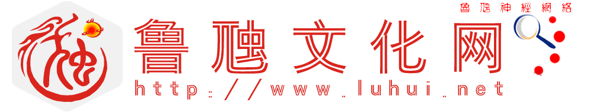

文化传媒
搜索大全
人工情感
设计智造
终极进化
生活服务
搜索引擎
关于我们
文化传媒
搜索大全
人工情感
设计智造
终极进化
生活服务
搜索引擎
关于我们
🧭鲁虺网络搜索引擎资源探索
所有搜索
热门
搜索器
网页搜索
搜索优化
音乐搜索
图片搜索
视频搜索
购物搜索
词典搜索
磁力搜索
文档搜索
新闻搜索
地图搜索
软件搜索
源码搜索
数据搜索
应用搜索
学术搜索
垂直搜索
目录搜索
人文搜索
万物搜索
元搜索
ftp搜索
搜救
其它
首页
尾页
上一页
下一页